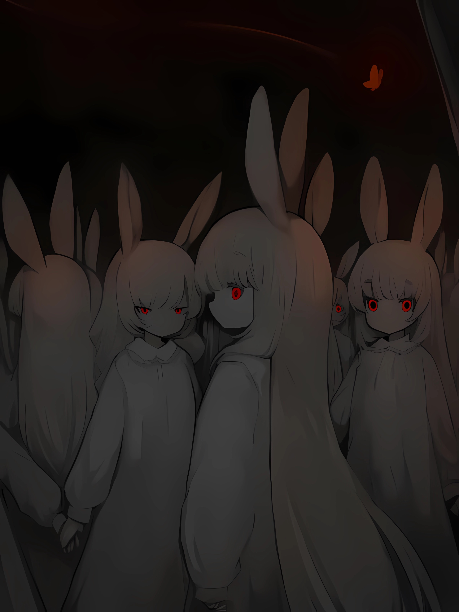
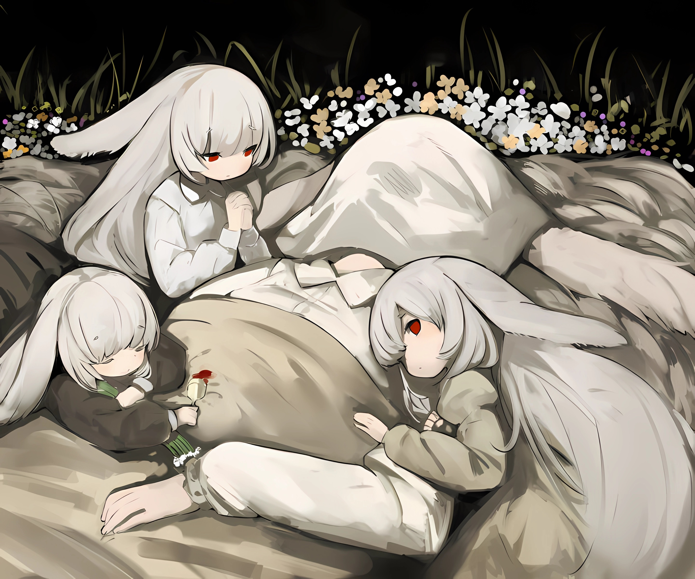

欢迎来到兔子站
这里是一个使用 C++/OpenGL/GLFW 渲染技术的演示网站， 展示如何创建精美视觉效果和交互体验。

C++
C++ 是一种高性能的系统级编程语言，广泛用于游戏开发、图形渲染和高性能计算。 它提供了直接的硬件访问能力和强大的抽象机制，是 OpenGL 编程的理想选择。
OpenGL
OpenGL 是一个跨平台的图形渲染 API，用于在计算机上生成 2D 和 3D 图形。 它提供了一套函数接口，允许开发者直接操作图形硬件，实现高性能的图形渲染。
GLFW
GLFW
GLFW 是一个轻量级的跨平台库，用于创建窗口、处理输入和管理 OpenGL 上下文。 它简化了 OpenGL 应用程序的开发过程，提供了一致的接口 across different operating systems.
OpenGL 教程
学习如何使用 OpenGL 创建基本图形，从窗口创建到三角形绘制的完整教程。
开始学习音乐欣赏
聆听精选音乐，体验网页音频播放功能。
进入音乐室兔子画廊

